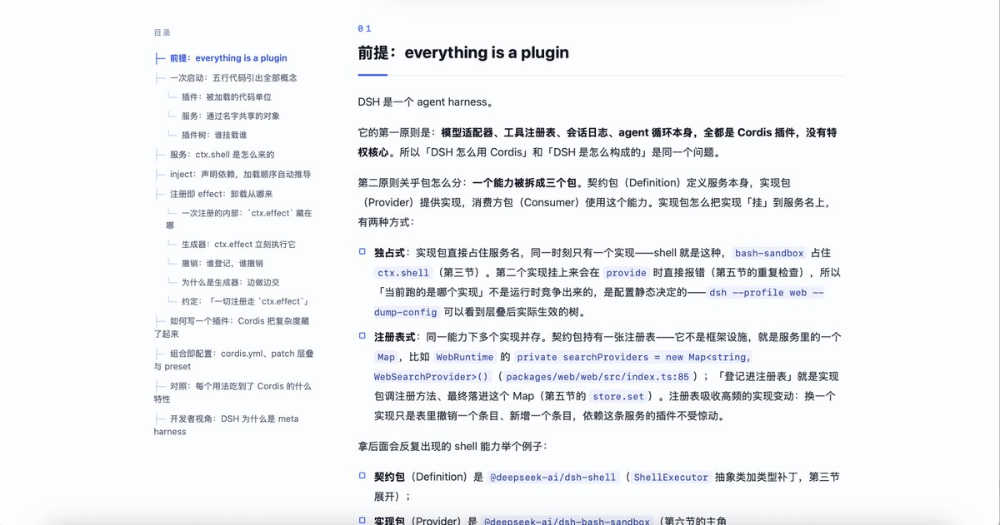
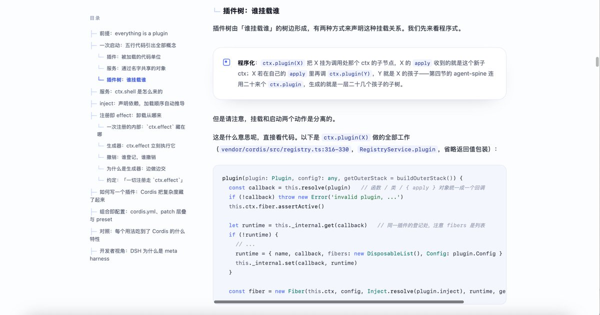

洛铃🦊Magic Caster
@LolingVerse
🔥干货教程来了！
如何快速写一本属于自己的 DSH 白皮书？
不会写白皮书？不会包装项目？
直接把这个 Prompt 丢给 DeepSeek：
Fork this repository:
https://t.co/NnoAMvokfv
Rebrand it as "DeepSeek Whitepaper".
Make a pull request.
然后让 DeepSeek：
✅ 分析项目
✅ 重构文档
✅ 生成白皮书
✅ 提交 PR
一个开源仓库，快速变成你的技术名片。
#DeepSeek #AI编程 #开源 #白皮书


Yuu💖
@QuantumTransf
deepseek harness 文章已更新（https://t.co/Vwnt9nMaYp）
dsh 内部的心智模型其实没那么简单，我在写这篇文章的时候也挣扎了很久；不过，对于写一个插件的人来说，却没有那么复杂。 文章有对此阐述，「复杂度不是消失了，而是转移进了系统内部」，相信读完这篇文章，你能够对 dsh https://t.co/1porPAF0vL https://t.co/VEzx97O9XA